现有页面（对照）
| 页面 | 入口 | 状态 |
|---|
| 主菜单（兼局外升级） | 启动即显示 | 完整 |
| 章节选择（12 章） | 主菜单「开始冒险」 | 完整 |
| 关卡选择（每章 5 关） | 章节卡片 | 完整 |
| HUD / 局内商店 / 升级面板 | 局内常驻 / 商店按钮 | 完整 |
| 结算页（胜/败/超时） | 局末自动弹出 | 功能全 · 纯文字无视觉 |
| 暂停 / 设置 / 确认 / 引导 / 统计 / 每日玩法 | — | 全部缺失 |
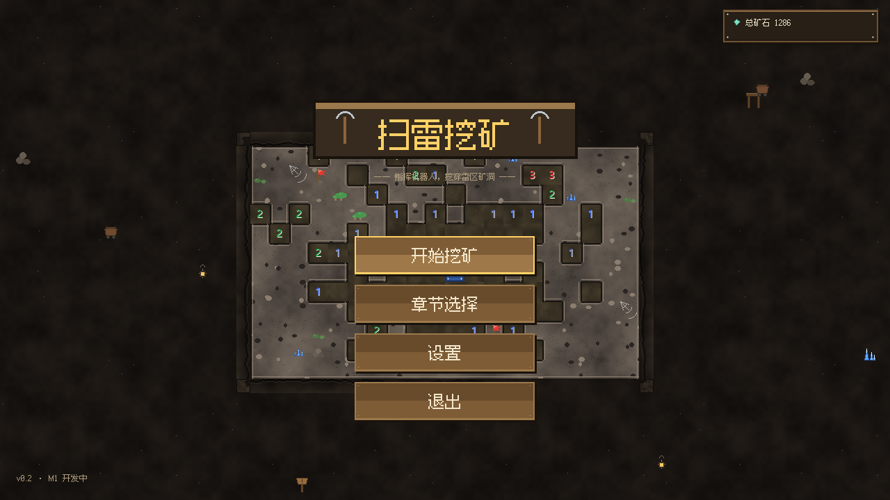
主菜单
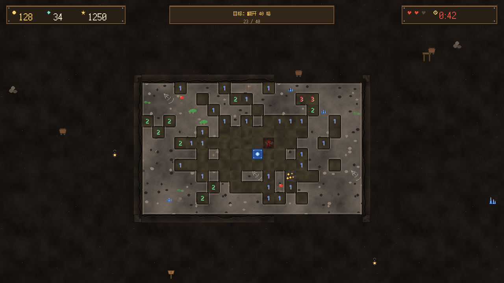
HUD
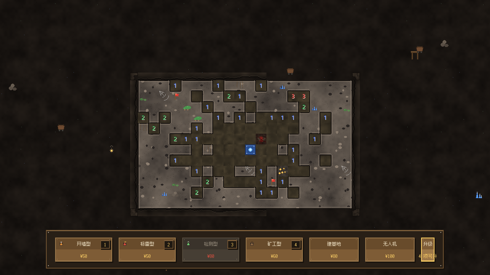
商店底栏
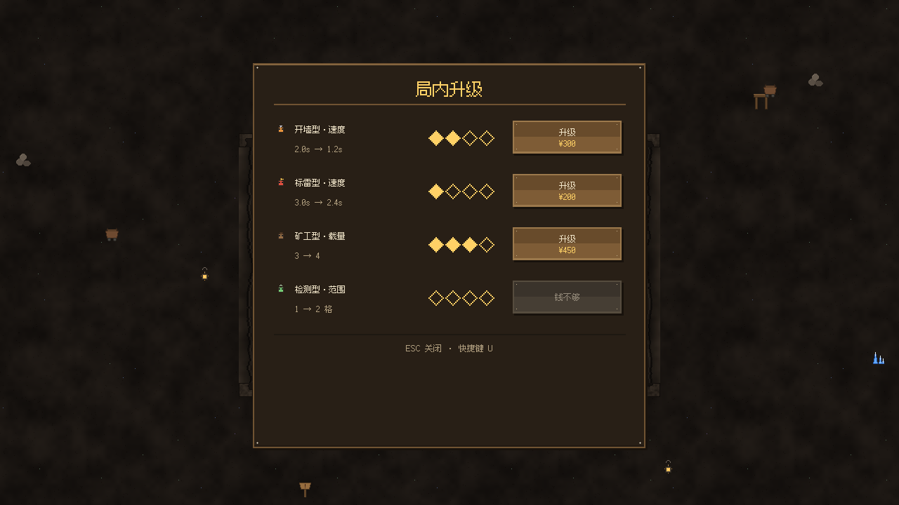
局内升级
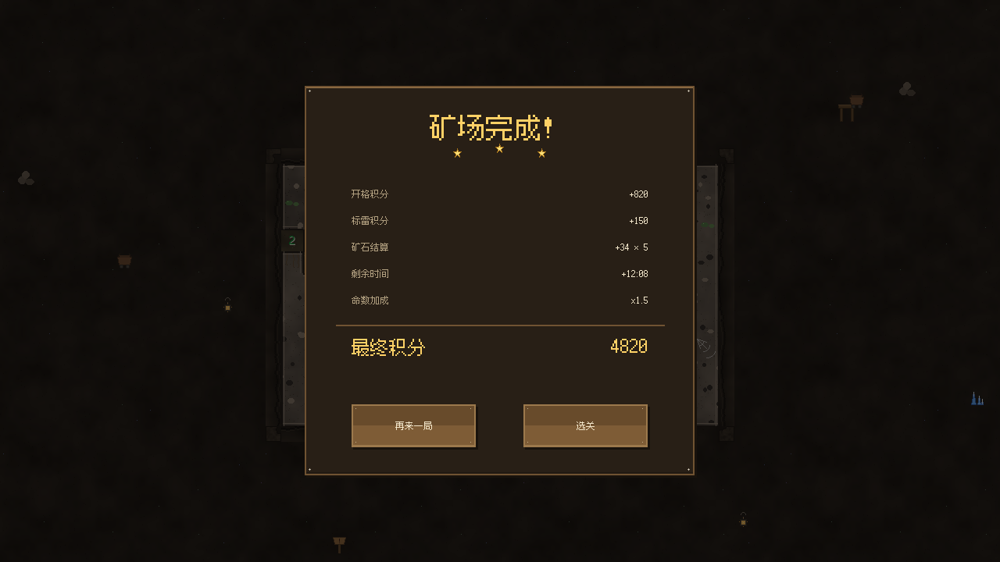
结算（现状）
缺失页面 · 9 屏视觉稿（点图可放大）
①
暂停页
P0
入口：局内按 ESC / HUD 暂停按钮
为什么缺它不行：现在局内按 ESC 只是退出放置模式，中途想停/想走只能杀进程——局内唯一出口。
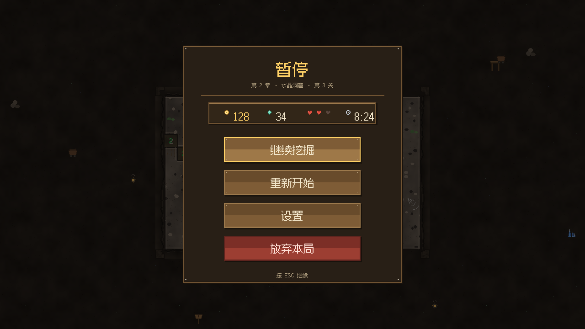
- 顶部显示「第几章·第几关」+ 本局状态条（金币/矿石/命数/时间）
- 继续（金边主按钮）· 重新开始 · 设置 · 放弃本局（红色危险按钮）
②
放弃确认框
P0
入口：暂停页「放弃本局」二次确认
为什么缺它不行：红色按钮若无二次确认极易误触；「矿石保留一半」的损失提示能明显降低放弃的挫败感。
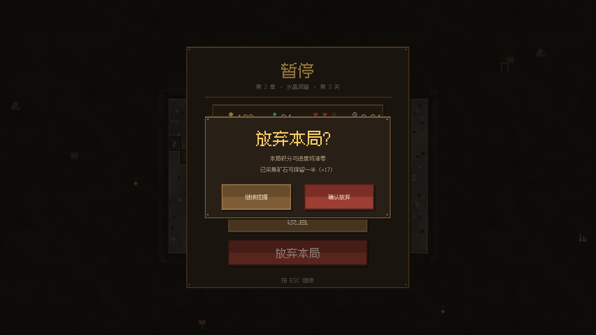
- 小对话框叠在变暗的暂停页之上，双按钮对置：继续挖掘 vs 确认放弃
- 文案明示损失规则：本局积分清零、已采矿石保留一半
③
设置页
P0
入口：主菜单 + 暂停页均可进
为什么缺它不行：音效/音乐开关是休闲游戏最低要求；「重看新手教程」是微信官方明确要求的入口。
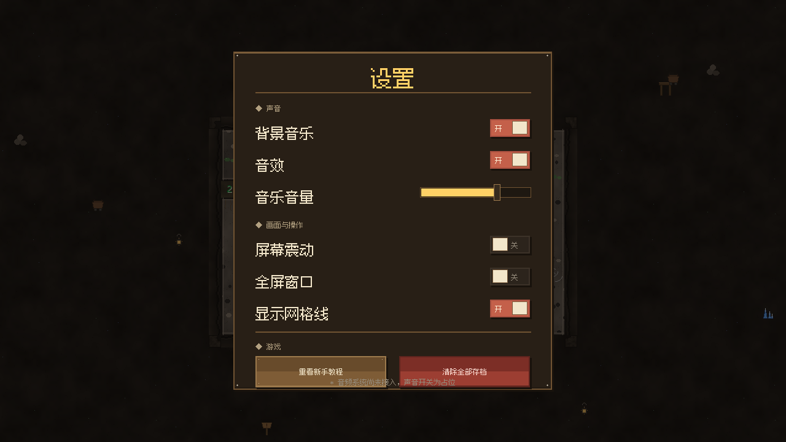
- 三段式：声音（开关+音量条）/ 画面与操作 / 游戏（重看教程、清存档）
- 清存档放红色危险区与普通操作隔离；音频系统未接入前开关为占位
④
闪屏 / 加载页
P0
入口：启动自动显示
为什么缺它不行：小游戏平台标配首屏；同时是品牌记忆点（LOGO+slogan）和健康忠告的合规位。
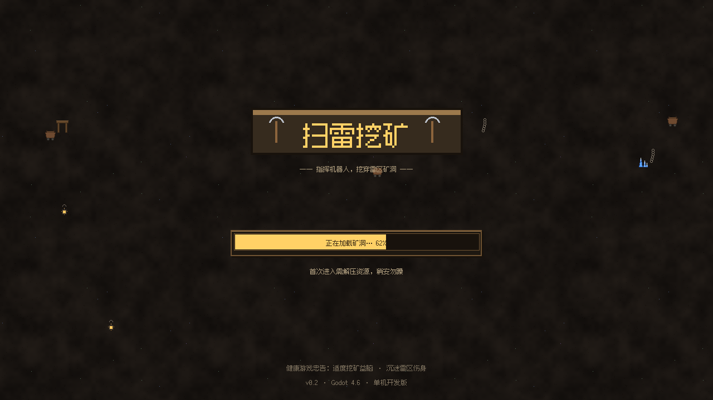
- LOGO + 木质进度条 + 版本号；底部健康游戏忠告（平台审核友好）
- 纯洞窟背景无棋盘，工作量极小，可最先做
⑤
结算页 V2（视觉化升级）
P0
入口：替换现有 ResultsPanel 的视觉
为什么缺它不行：结算页现在是纯文字标签，是玩家情绪最高点却最丑的一屏；也是小游戏唯一的「广告位」标准位。
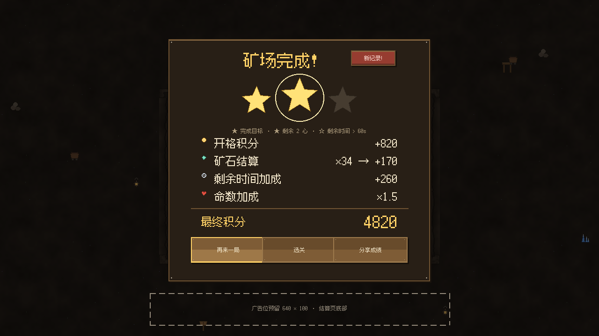
- 大星级 + 中星弹出光环 + 「新纪录!」角标 + 分项奖励图标化
- 三按钮：再来一局 / 选关 / 分享成绩；底部虚线框 = 广告位预留（腾讯规范建议位）
⑥
挖矿档案（统计页）
P1
入口：主菜单新增按钮
为什么值得做：胜率/最佳时间/连胜是经典扫雷的标配统计，我们的存档已有星级数据，是留存三屏里成本最低的。
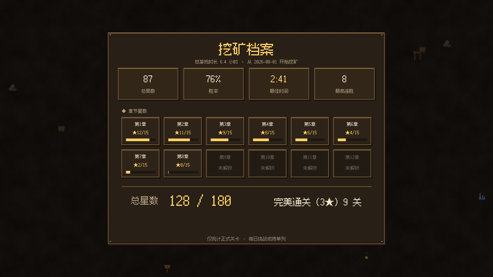
- 四张数据卡：总局数 / 胜率 / 最佳时间 / 最高连胜
- 12 章星数总览（含未解锁灰态 + 进度条）+ 总星数、完美通关数
⑦
每日挑战
P1
入口：主菜单新增按钮
为什么值得做：扫雷类最强的日活抓手（MS Minesweeper 同款）：全球同图拼时间，每天给玩家一个回来的理由。
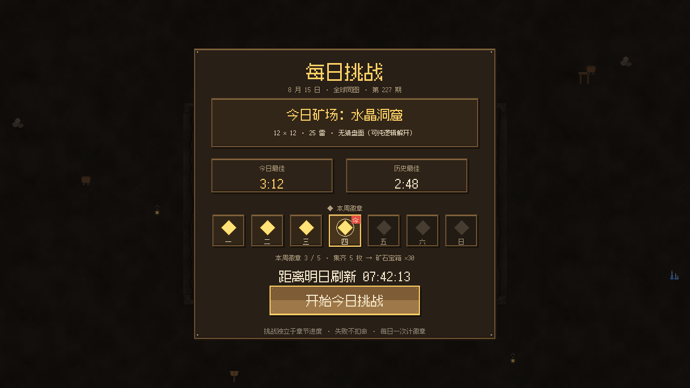
- 今日矿场卡（无猜盘面 = 可纯逻辑解开，口碑利器）+ 个人今日/历史最佳
- 本周徽章集 5 枚换矿石宝箱 + 明日刷新倒计时；失败不扣命降低参与门槛
⑧
矿工签到
P1
入口：每日首次进入弹窗 / 主菜单按钮
为什么值得做：7 日递增 + 断签重计是休闲小游戏几乎人手一套的日活机制，第 7 天皮肤大奖接住长线收集欲。
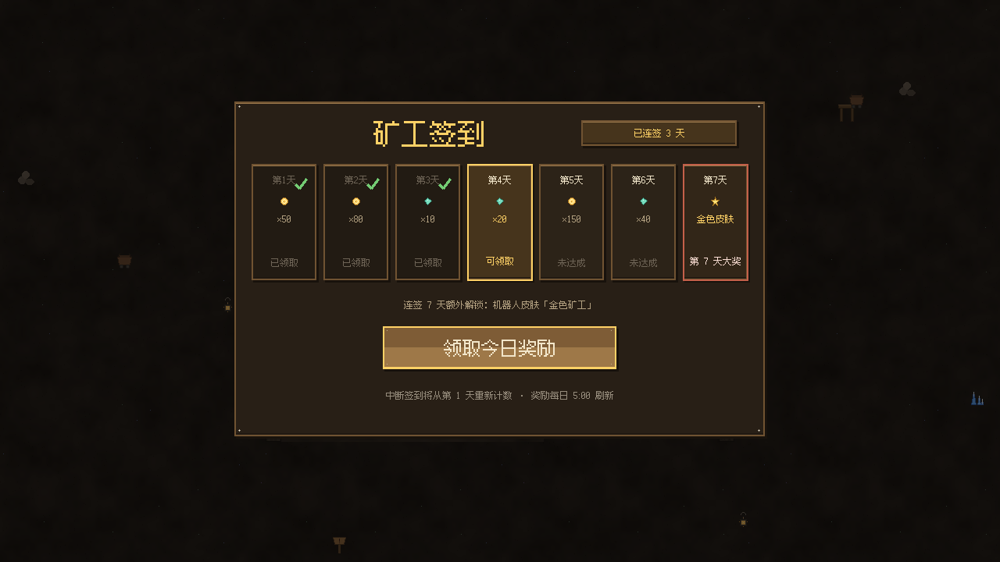
- 7 天奖励格：已领（绿勾灰态）→ 今日（金边高亮可领）→ 未达成 → 第 7 天大奖
- 连签计数角标 + 断签规则、刷新时间明示
⑨
新手引导
P1
入口：第 1-2 关自动触发；设置页可重看
为什么值得做：我们是扫雷变体（机器人+建基地），规则比经典扫雷复杂，「边玩边学」的分步引导直接决定新手留存。
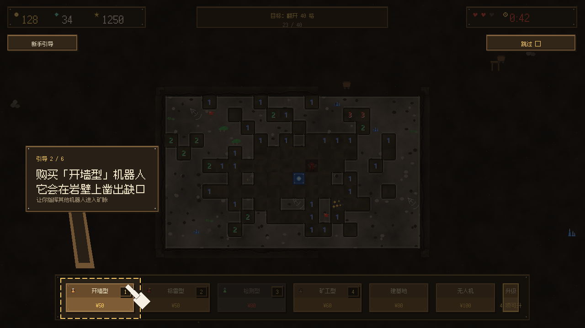
- 聚光遮罩：全屏压暗只亮目标按钮，金色虚线框 + 像素手指
- 指引气泡带尾巴指向目标；步骤计数 2/6 + 右上角「跳过」（尊重老玩家）
建议实施顺序
第一批 · 纯 UI 无新系统
- ① 暂停页 + ② 放弃确认
- ③ 设置页（开关先占位）
- ⑤ 结算页视觉化
改动只在 UILayer 加节点 + 状态屏蔽，一天量级
第二批 · 入口与引导
- ④ 闪屏加载页
- ⑨ 新手引导（分步脚本）
- 主菜单加新按钮位
引导需要小型步骤状态机，第 1-2 关触发
第三批 · 存档扩展
- ⑥ 统计页（需埋点：局数/用时）
- ⑦ 每日挑战（需日期+固定种子）
- ⑧ 签到（需连签/领取记录）
三屏都要往 SaveSystem 加字段，先定数据结构